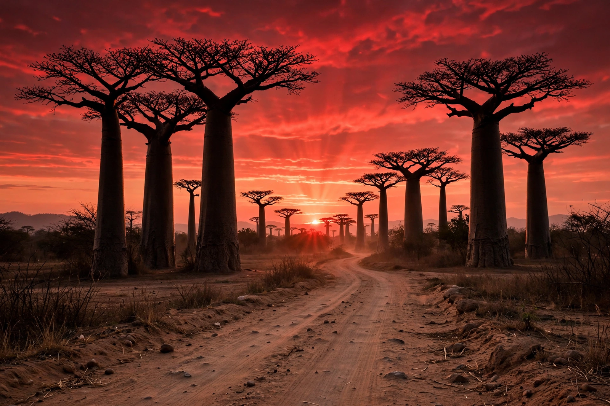

| Capital | Antananarivo |
|---|---|
| Official languages | Malagasy, French |
| Population | About 30 million (2020s estimates) |
| Area | 587,041 km² — the world's fourth-largest island |
| Independence | 26 June 1960, from France |
| Currency | Malagasy ariary (MGA) |

Madagascar, officially the Republic of Madagascar, is an island country in the Indian Ocean, off the southeastern coast of Africa across the Mozambique Channel. It comprises the island of Madagascar — the fourth-largest island in the world — and numerous surrounding islets. Its capital and largest city is Antananarivo.
The island split from the African continent about 180 million years ago and from India some 90 million years ago, allowing its wildlife to evolve in near-total isolation. As a result, roughly 90 per cent of Madagascar's species are found nowhere else on Earth, including all of its famous lemurs, the fossa, and six of the world's nine baobab species. The eastern escarpment catches Indian Ocean trade winds and supports rainforest, while the west and south are progressively drier, with spiny thickets in the arid south.
Madagascar was settled remarkably late — probably by Austronesian seafarers from Borneo in the first centuries AD, later joined by Bantu migrants from East Africa; the Malagasy language belongs to the Austronesian family. A patchwork of kingdoms emerged, the most powerful being the Merina kingdom of the central highlands, which unified most of the island in the nineteenth century. France colonised Madagascar in 1896; independence was restored in 1960. Since then the country has alternated between democratic and authoritarian governments, with political crises in 1972, 1991, 2002 and 2009.
Madagascar is one of the world's poorest countries; most of the population works in subsistence agriculture, growing rice, cassava, coffee and vanilla — of which Madagascar is the world's leading producer. The population of around 30 million is divided among some 18 ethnic groups, united by the Malagasy language and a culture blending Southeast Asian and African influences, including the famadihana ("turning of the bones") reburial ceremony.